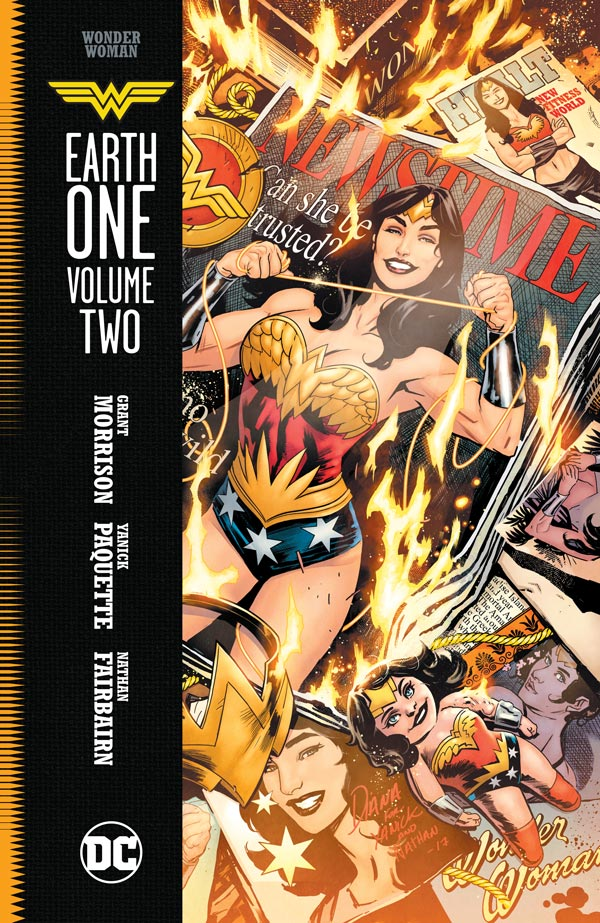

Morrison and Paquette Discuss Wonder Woman: Earth One Vol. 2
Return to Wonder Woman's Earth One as the second volume of Grant Morrison and Yanick Paquette's graphic novel series
30 April 2018
For those of you unfamiliar, the Earth One graphic novels are special out-of-continuity stories that reimagine some of the DC Universe's most familiar heroes in a totally unfamiliar light, whether it's stripping Green Lantern of his willpower or imagining Bruce Wayne getting kidnapped for ransomrather than orphaned in an alleyway.
For Diana Prince, Earth One means a brand-new look at both the origin story of Wonder Woman, the culture of Themyscira altogether and her role as an Amazon ambassador to the world of man, something that gets further explored under the highest of stakes in the upcoming, eagerly anticipated WONDER WOMAN: EARTH ONE VOL. 2. Recently, we sat down with writer Grant Morrison and artist Yanick Paquette to get some insight on their world building process, their vision of Diana, and most importantly, some exclusive teases for what’s ahead in volume two.

So, when we left Wonder Woman: Earth One, it was with a pretty major cliffhanger. Diana wants to have a chat. What is that conversation going to sound like?
Grant Morrison: We wanted to make a version of the Wonder Woman story that was almost plausible or almost believably real. So, WONDER WOMAN: EARTH ONE VOL. 1 was the idea of, you know, what happens if a beautiful princess comes up from a previously unknown island that has better technology, better ideas, more amazing philosophies—better everything. They're so much better than our culture. How does man's world react to that? The patriarchy of the world outside of Paradise Island, how does that culture react?
With the second volume, it's our Empire Strikes Back volume. It's Diana coming up against the lens of her beliefs and she sees this big challenge from the world as we know it. It's kind of very much what would happen to Wonder Woman in the actual real world.
In a story that revolves so much around folding in the sort of disparate elements of Diana's history and giving them an update or a bit of a rework, has there been anything either of you have been really excited to get your hands on?
Morrison: Yeah! I'll let Yanick talk next here, but for me it was definitely going back to the William Marston stuff and it was really about those weird ideas that he had. He was a very interesting man, led a very interesting life, and his ideas were quite strange. We want to take those ideas as the root of Wonder Woman very seriously, and also critique them. I think for me that was the interesting thing, going back to those strange, psychological 1930s bondage polyamory ideas and saying, "What would happen? What would actually happen if those were exposed to the way people think now?"
So for me, it was taking the original source of Wonder Woman and being really serious about it. Treat it as something new, but also kind of question it, expose it. At the same time, consider it like something to offer.
Yanick Paquette: These characters have been reworked over generations and though I really enjoy the Wonder Woman as she's mainstreamed today—which is closer the classical superhero, fighting, etc.—the early Wonder Woman is so strange and so original, it's almost sad that it's being...not forgotten, but somehow made incompatible now. So, we are trying to find a way to make that relevant again, and that challenge I think is worth exploring. It's the original version, so.
Yanick, in the first volume, the Amazons—even the ones who go totally unnamed in the story—have really distinct looks and costumes. Can you talk a little about populating this world and where you pulled from to flesh it all out even beyond the core cast? Where are those designs coming from?
Paquette: I love research, so when I do a project with a real place, I spend a lot of time in Google "walking" the streets or just gathering a massive amount of imagery. But with something that's fantasy, I felt like I needed something that I could use as a basic ingredient that I could extrapolate to really show their culture. So, in the case of the island, their clothing, their technology, I wanted to take some flare from the original Greek aspect of them, but I thought about how it would be if it was exposed to nature, to birds, sea shells, feminine forms. So, these are the basic ingredients from which I can try to extrapolate what this culture would look like. For everything—for a building, for a door knob, for a weapon—I looked at them and thought, "Oh yeah, [the Amazons] have seen these things for years." So, it makes sense.
But I also wanted them to seem indebted to the Greek side of their culture without feeling trapped by it, which I feel sometimes people do.
Morrison: I feel like that's also where we're different from the movie version, which I really loved, but what we're doing is saying that in this research and years of mythology, the Amazons have developed their own philosophy, their own way of speaking, their own way of living. That's the ideal and also the threat they represent: they have an alternative culture.
You're still working with colorist Nathan Fairbairn on the second volume, yes? Or is it a different colorist coming in?
Paquette: Oh yeah, I'm a very faithful guy. Nathan's my man. We've been sharing a secret cloud hard drive that DC doesn't see so we can solve our graphic problems and work through whatever we don't agree on. Part of the idea that Nathan and I had with these books was this bright—not bright as in punchy color, but sometimes these narratives can get very dark and dramatic in the colors. So, we felt like we wanted to see the beauty and the poetry. I wanted to see the sun and the warmth of the island. I think we're going in that direction for volume two, too.
.jpg)
Is the second volume predominantly going to be set on Man's World, or will we be hopping back and forth between that and the island again?
Morrison: We cut back and forth. It's not quite as cut-and-dry as volume one, but there's certainly a back and forth. But it's mostly about Diana in Man's World and how Man's World reacts.
Though I'll always put "Man's World" in scare quotes. It's hard to deal with a strange culture, especially coming from an even stranger culture that's even more evolved. It's about Diana's interaction with that world, and I think that's what we've done. We've separated her friends and family. She can't go back home for reasons you'll see in the book, and she's up against forces she's never imaged. She's a very progressive, forward-looking young woman, and suddenly she's up against very understandable modern forces of inertia.
In volume one, we've got the Gorgon a little bit, we've got Hercules who has kind of been re-cast from his—I won't say "traditional" story, but we see him in a form we haven't seen in a while…
Morrison: Hercules is somehow involved with Diana's parentage with Hippolyta. I love the character Hippolyta. I love the idea that she basically just took Hercules' genetic material and decided to weaponize it for women. She took the ultimate monster, the ultimate masculine force, and turned it into a weapon for women. It's not so much that Hercules is Diana's father in this story, it's that Hippolyta used Hercules' genetic material to create Diana.